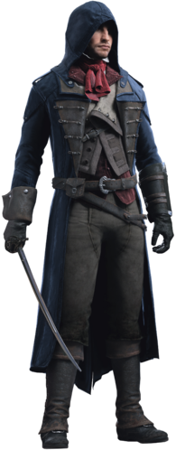

.
.
Arno was born into a noble household in Versailles, France, on August 26, 1768, as the only child of Charles and Marie Dorian. Because of his upbringing, Arno was well-educated and had access to a wide selection of tutors and books from a young age. Some years later, Marie discovered her husband's allegiance to the Assassin Brotherhood and abandoned her family, leaving Charles to raise their son alone. Since then, Arno frequently traveled with his father, visiting places around Europe and North Africa.In 1776, Arno accompanied his father to the Palace of Versailles, where he was scheduled to meet with his fellow Assassins and discuss with them the protection of the Precursor box, a First Civilization artifact that had been recovered from the Colonial Templars twenty-five years earlier. Once inside the palace, Charles instructed Arno sit in a chair while he went to meet with his fellow Assassins. Arno wished to go with his father, who assured him that he would return shortly - even giving Arno his pocket watch to keep track of the time - and see fireworks with him. Before leaving, Charles asked Arno to stay put and not run off, to which Arno reluctantly agreed. However, a mysterious young noble girl appeared and enticed Arno into chasing her. As soon as he caught up to the young girl, she encouraged him to steal an apple from a nearby bowl, prompting several guards to chase him away. Arno then introduced himself to the girl, who then proceeded to introduce herself as Élise de la Serre. She claimed that her father was meeting with King Louis XVI. As they continued playing, Charles Dorian was murdered by the Colonial Templar Shay Cormac.Arno and Élise overheard nearby commotion and, thinking the guards were still after them, confessed to stealing an apple; when the guards ignored him and continued onwards, Arno and Élise followed them (at her urging) to see what was going on. Seeing his father's deceased body, Arno could only stare in silent, horrified shock. He was brought out of his stupor by François de la Serre, Grand Master of the French Rite of the Templar Order, who then adopted the young boy. Initially, de la Serre kept his allegiance to the Templars a secret from Arno, mainly out of respect for the boy's late father, but also because his wife Julie and daughter Élise asked him to do so, although he did tell Élise to try and influence him into joining their cause. From that point forward, Arno was raised alongside Élise, with whom he bonded with over the years. However, Arno remained distraught over the loss of his father and often wrote letters to him on his adopted father's suggestion, in order to cope with his grief.